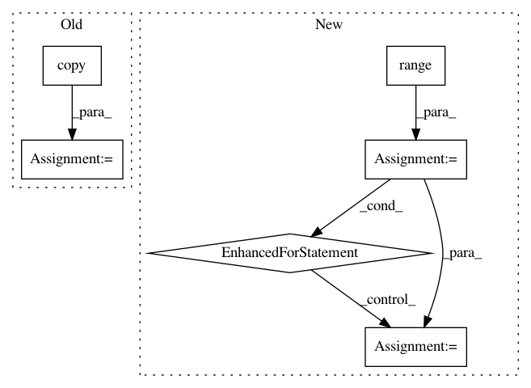

9b68103b737ac46bc201dfb3121cfa5df2127e53,baselines/common/vec_env/vec_monitor.py,VecMonitor,step_wait,#VecMonitor#,29
Before Change
self.eplens += 1
newinfos = []
for (i, (done, ret, eplen, info)) in enumerate(zip(dones, self.eprets, self.eplens, infos)):
info = info.copy()
if done:
epinfo = {"r": ret, "l": eplen, "t": round(time.time() - self.tstart, 6)}
info["episode"] = epinfo
if self.keep_buf:
After Change
self.eplens += 1
newinfos = list(infos[:])
for i in range(len(dones)):
if dones[i]:
info = infos[i].copy()
ret = self.eprets[i]
eplen = self.eplens[i]
epinfo = {"r": ret, "l": eplen, "t": round(time.time() - self.tstart, 6)}
for k in self.info_keywords:
epinfo[k] = info[k]
info["episode"] = epinfo
if self.keep_buf:
self.epret_buf.append(ret)
self.eplen_buf.append(eplen)
self.epcount += 1
self.eprets[i] = 0
self.eplens[i] = 0
if self.results_writer:
self.results_writer.write_row(epinfo)
newinfos[i] = info
return obs, rews, dones, newinfos
In pattern: SUPERPATTERN
Frequency: 3
Non-data size: 6
Instances
Project Name: openai/baselines
Commit Name: 9b68103b737ac46bc201dfb3121cfa5df2127e53
Time: 2019-05-08
Author: peterzhokhoff@gmail.com
File Name: baselines/common/vec_env/vec_monitor.py
Class Name: VecMonitor
Method Name: step_wait
Project Name: kengz/SLM-Lab
Commit Name: 861657d2c9b321961994c8cdd0e58b6c4fe0645f
Time: 2018-09-03
Author: kengzwl@gmail.com
File Name: slm_lab/env/__init__.py
Class Name: EnvSpace
Method Name: __init__
Project Name: automl/auto-sklearn
Commit Name: 1e8294a7dffdc3d3cf6c7257e841e13dd27c0a25
Time: 2016-01-22
Author: feurerm@informatik.uni-freiburg.de
File Name: autosklearn/metrics/util.py
Class Name:
Method Name: log_loss